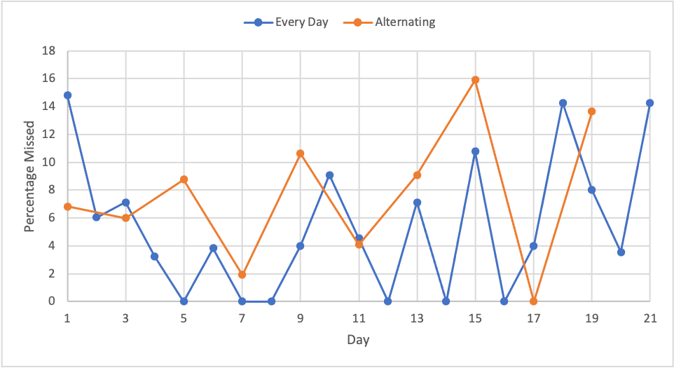
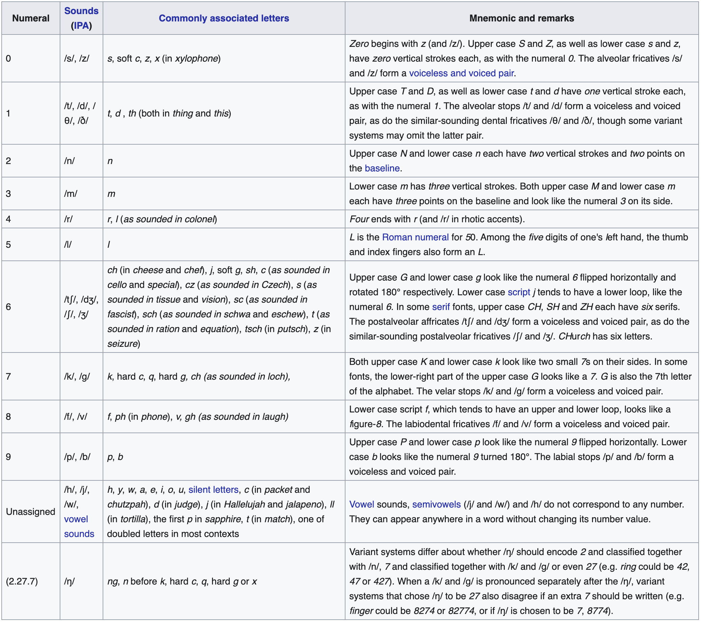

Spaced Repetition Systems (SRS)
Information regarding space repetition, including information suggestions and personal experiments.
Contents
Resources
LessWrong Spaced Repetition Wiki provides all the information you can ever want or need about spaced repetition. Includes the science, blog posts, and various decks, among other items.
Why Use SRS?
You can remember virtually anything using SRS and with minimal effort. To put it in perspective, I've learned and remembered the following: all countries and their capitals, flags and locations; all elements and their symbols, atomic numbers, and atomic masses; poems. This is not a complete list.
Over the last year, I've spent an average of 8.3 min/day studying those cards. Less than 10 min/day to learn all of that information. Of course, you can be more or less aggressive with the number of new cards introduced per day.
Suggestions
Below you can find a list of information suggestions. I include information based on a few factors:
-
Is this useful for me to know?
-
Is this interesting for me to know?
-
Do I forget this often?
I keep a record of everything I would like to add throughout the week, then during my weekly review/planning, I add all the information to Anki.
-
Geography: Countries, country capitals, country flags; states, state capitals, state flags; mountains, mountain ranges; oceans, seas, rivers, lakes; regions
-
Chemistry: Element symbols, element names, atomic numbers, atomic masses; group names; bonds, molecular structures
-
Poems: Invictus, New Colossus, Do not go gentle into that good night, 1 January 1965. (I've found that when learning poems, everyday practice is best. When maintaining the learning, spaced repetition is sufficient.)
-
Quotes
-
Laws/Rules/Razors: Murphy, Goodhart, Occam, Hanlon, Dunning-Kruger, Finagle, Hitchen, Alder, Chekhov's gun, Cunningham
-
History: Seven ancient wonders, seven new wonders, seven deadly sins, important dates, famous artwork
-
Acronyms: Laser, QED, DOI
-
Miscellaneous: Roll/yaw/pitch, type I/II errors, SI units, port vs. starboard, NATO alphabet, U.S. police alphabet, life of universe
-
Constants: Electron rest mass, pi, e, Planck's constant, G, g, SI prefixes, speed of light, fundamental charge, Boltzmann constant, Avogadro's number
-
Personal numbers: Phone (personal, friends, family, coworkers), credit cards, licenses, accounts, passwords
-
Relationships: Birthdays, likes, dislikes
-
Languages: Vocabulary, sentences, pronunciation, minimal pairs, grammar
-
Equations: Physics, engineering, mathematics
-
Forgettables: Things you often forget or misremember
-
Fallacies
-
Jokes
-
Callouts in video games
-
Procedures, recipes (food and drink)
-
Code: HTML
-
Fun facts
-
Part numbers
-
Solutions to problems: Schrödinger's wave equation
-
Hotkeys: save, select all, copy, paste, go to address bar, quit, minimize (there's no substitute to practicing these!)
-
Types of clouds
-
Directions
-
Trigger-action plans
And the list can go on. The point is you can learn and remember anything with minimal effort using spaced-repetition.
Decks
Below is a list of interesting and useful Anki decks. All shared decks can be found here.
-
Ultimate Geography: 206 sovereign states (names, locations, capitals), 52 territories and world regions, and 39 oceans and seas.
-
Great Works of Art: 651 different pieces of art with corresponding information, including title, artist, date, period/movement, medium, and any notes.
-
Periodic table memory pegs: Learned elements 1-107 and 113 using pictures.
-
For decks related to medicine, see r/medicalschoolanki.
Alternating Days
I fell out of my daily Anki routine for some time, but seemed to notice that I got better results when I alternated review days. To test this, I spent three weeks with each method: every day vs. every other day. I noted how many cards I had due that day and how many I missed. No new cards included in the statistics.

Average missed percentages come out to 5.43% for every day and 7.69% for alternating days.
A few reflections/notes:
-
I should have noted down the total time each session took.
-
I do not feel like the three-week trial period for both types of practice was enough. More time spent with each type of practice will give better results, but for now I will stick with practicing every day.
-
I could not find any literature or other experiences with spaced spaced repetition, i.e., waiting two or more days before reviewing again.
Memorization
As of 11 July 2021, I have stopped learning and using the major system to focus on other projects.
I use the major system and Anki for memorizing long numbers.

Two helpful Anki decks:
-
Major System (Trainer, IPA, with audio): Sounds associated with numbers.
-
Major System pictures: Cards with pictures and associated numbers, e.g., file = 85. There is something to be said about creating flashcards yourself: Gabriel Wyner (author of Fluent Forever) claims it is important that you make your own language-learning Anki cards, as you learn them along the way and they're your own. Edit this deck's pictures as needed.
See Also